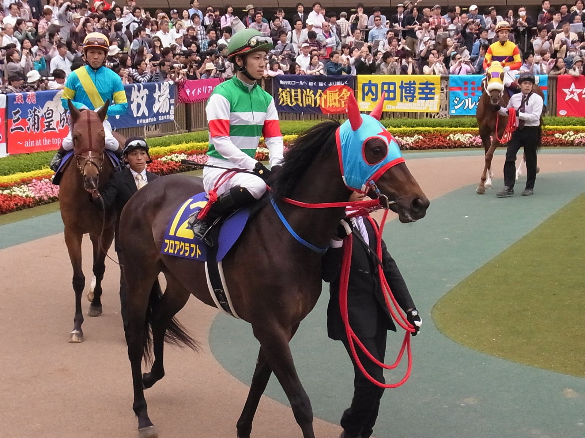

Giro en Ballydoyle: Constitution River irá al Champion Stakes y Gstaad se queda en la milla
Aidan O'Brien llevará a Constitution River al Champion Stakes del sábado en Ascot, mantiene a Gstaad en la milla para la QEII y descarta a Scandinavia en la Long Distance Cup.

El cambio llega a las puertas del British Champions Day y da la vuelta a lo que el propio preparador había dejado entrever. Hasta ahora, la idea en Ballydoyle era que Constitution River, ganador del Prix du Jockey Club y de la Coral-Eclipse, bajara a la milla, y que su compañero de cuadra Gstaad subiera de distancia para medirse en el Champion.
Finalmente será al revés. O'Brien lo explicó en un vídeo: "Hemos hecho algunos cambios en los planes del sábado. Íbamos a correr con Gstaad en el Champion, pero lo hemos cambiado. Vamos a dejarlo en la milla. Creemos que quizá no sería justo para él correr el Champion Stakes la primera vez en esa distancia, frente a caballos mayores y más curtidos".
El preparador irlandés se agarra a los antecedentes de Constitution River sobre la milla y cuarto. "Todas sus carreras sobre esa distancia han sido muy buenas", afirmó. Y dio su explicación para el último tropiezo: "El último día, cuando corrió en Leopardstown, todos nuestros caballos estaban un poco enfermos y pensamos que pudo ser un factor importante en su carrera. Desde entonces está muy bien. Ahora es, evidentemente, un caballo muy rodado".
Las apuestas no lo sitúan como favorito. Calandagan encabeza el mercado del Champion Stakes, justo por delante de Ombudsman, mientras que Constitution River se ofrece en torno al 11/2.
Scandinavia no correrá la Long Distance Cup del sábado. Para esa prueba, O'Brien baraja presentar dos caballos, uno de ellos Queenstown, tercero en el Prix du Cadran, "donde hizo una carrera muy buena", según sus palabras.
Por Martín Larrañeta